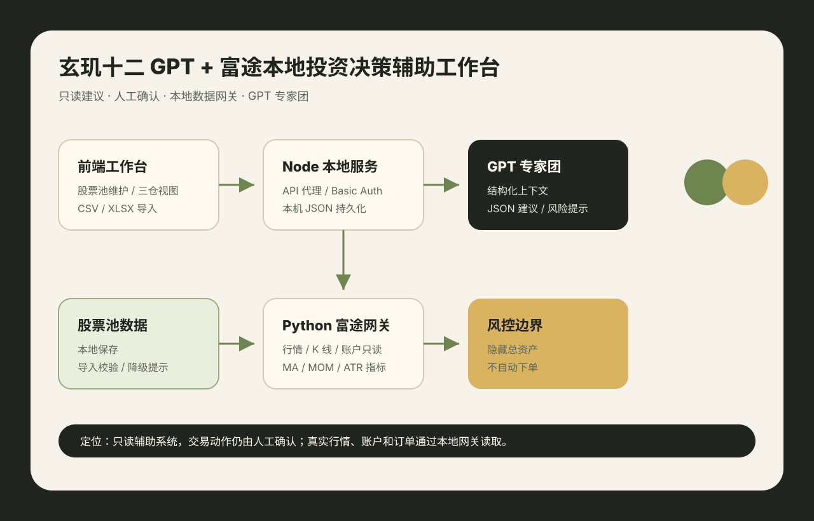

AI Agent 应用 + 本地数据网关 · 2026.06
玄玑十二 GPT + 富途本地投资决策辅助工作台
构建本地化股票决策辅助工作台，覆盖股票池维护、行情读取、三仓筛选、账户只读查看、GPT 专家建议和风险提示流程。系统边界明确为“只读建议 + 人工确认”，不执行自动交易。
- React + TypeScript + Vite 实现前端工作台，支持股票池编辑、CSV/XLSX 导入、本地保存和三仓视图。
- Node.js 服务封装 OpenAI Responses API 代理、Futu 网关转发、股票池持久化和可选 Basic Auth。
- Python 富途只读网关读取行情、K 线、持仓、账户和订单，并计算 MA20/50/200、MOM20、ATR 等指标。
React · TypeScript · Vite · Node.js · Python · futu-api · OpenAI Responses API · xlsx · JSON
